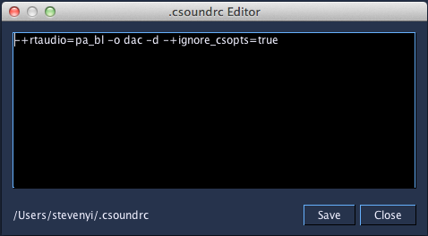

.csoundrc Editor

The .csoundrc Editor tool allows for editing the system-wide .csoundrc file. The editor is accessible from the Tools menu and launching it will open up the file pointed to by the environment variable CSOUNDRC or search for the file in $HOME/.csoundrc. If neither is found, the editor will open up with a file pointing to $HOME/.csoundrc.
When the dialog opens, the contents (if a file is found) is shown to edit in a simple text area. The absolute path of the file found is shown in the bottom left hand side. Pressing the Save button will save the contents and close the dialog, and pressing the Close button will close the dialog without changes.
For more information about .csoundrc, please view the Csound Manual entry for Command Line Parameter File (.csoundrc).